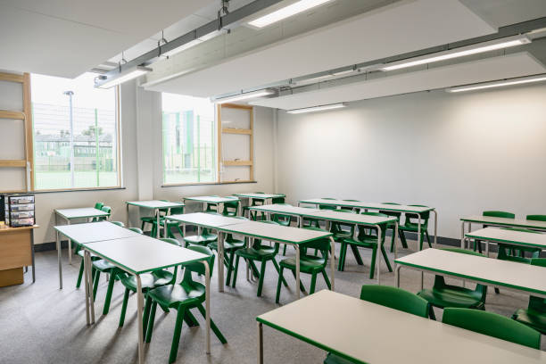

PROFESSIONAL LIFE
Tumar Academy, March 2021 - present
Founded online education center. Successfully prepared 400 students to apply to Nazarbayev University and abroad.

ACADEMIC LIFE
Nazarbayev University, School of Science and Humanities, Bachelor of Arts in Political Science and International Relations, August 2020 - present
Expected graduation date - June 2022 cGPA: 3.20 Credits earned: 180
VOLUNTEERING
NU Red Crescent Society IHelper September 2019 - present
Active volunteer, developer of the IHelper inclusive program for Socially Vulnerable Category for Astana residents Head of the inclusive department provision at Nazarbayev University. Leading 40 people - 20 typical and non typical students and 20 tutors from NU.